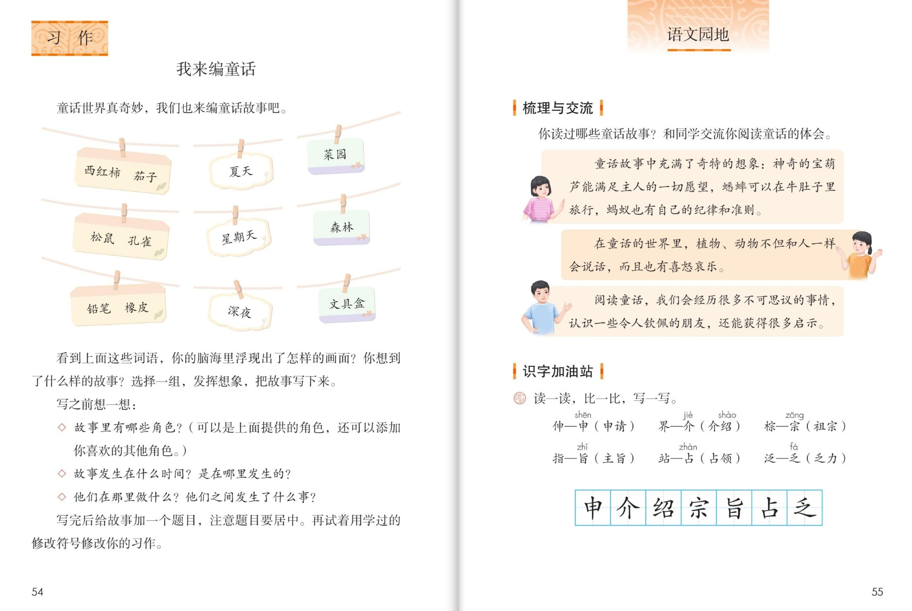
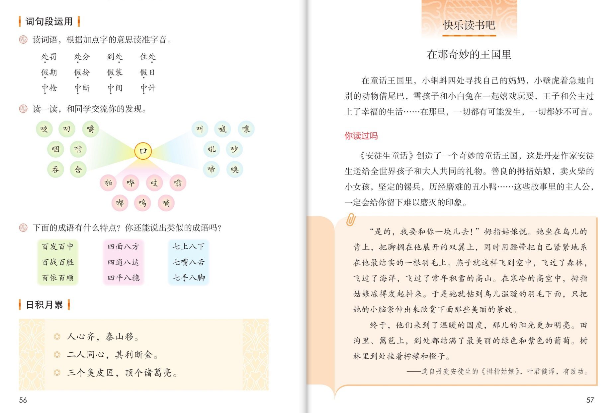

×
🔊 手机听不到声音怎么办？
① 先把手机
媒体音量调大 ，确认没开静音、没连蓝牙耳机；在微信里打开的，点右上角「⋯ → 用浏览器打开」。
② 还是没声音？到应用商店免费下载
Microsoft Edge 浏览器 （它自带朗读发声），用它打开本页面就能出声。
③ 换了 Edge 仍然没声音，说明这部手机的
硬件/系统不支持 网页朗读（多为老旧机型）；近几年买的新手机一般都能正常播放。
→ 打开声音自检
🧭 语文园地四 · 有声图文学习页
统编版语文 · 第四单元 · 课本 P55~56 · 素养升级版（对标 2022 课标第二学段）
板块内容 9 段
素养目标 4
识字加油站字 7
听写词 12
近义词 4 组
深入理解 8 题
本板块本领 辨多音字·找规律·诵名言
🎧 语文园地这样学（可随时点任意一句、一个字、一个词单独听）： ① 听读板块内容 ——梳理与交流、识字加油站、词句段运用、日积月累，逐句点读。② 学字词 ——识字加油站的 7 个字，先读准再照田字格写一写。③ 词语·听写 ——听写 12 个多音字词，再听 4 组形近字辨析。④ 深入理解 ——8 道题，把规律找出来、把名言读懂。⑤ 分角色示范 ——体会汇报员、多音字小老师、口字旁讲解员、名言朗诵。🌟 本单元收获：童话的想象、真善美的种子——都在这节园地课里汇总。
📌 本单元语文要素——感受童话丰富的想象，体会其中的真善美；习作：试着自己编童话、写童话。
🀄 文化自信
🀄 文化自信
诵读“人心齐，泰山移”等名言，感受中国人团结协作的古老智慧。
🗣 语言运用
🗣 语言运用
读准处罚、假期、中枪里的多音字，发现口字旁形声字的规律，比较申、介、宗、旨、占、乏等字形。
💡 思维能力
💡 思维能力
交流阅读童话的体会，发现三组成语的数字规律，并说出类似的成语。
🎨 审美创造
🎨 审美创造
把口字旁的字读成一幅热热闹闹的生活画，把团结的名言读出力量。
点段前的 ①②③ 听整段
🔁 跟读模式：关
👁 隐藏注音（自测用）
词语卡上的拼音标的是易错音，读音供参考
🎤 学习要求（教材标准） 童话的体会 ；识字加油站 的 7 个字；处罚、假期、中枪 三组多音字词；口字旁汉字 和成语 的规律，再说出类似的成语；三句名言 。
💡 园地学习小提示（五步走） 读导语 ——明确任务；第二步 串体会 ——把单元读过的童话串一串；第三步 辨多音字 ——字义定字音；第四步 找规律 ——口字旁、数字成语里都藏着秘密；第五步 背名言 ——把团结的力量记在心里。收获大会 ——一个单元的本领都在这里。
①
你读过哪些童话故事？和同学交流你阅读童话的体会。
📌 这一段讲：梳理与交流：说说你读过哪些童话，交流阅读体会。
②
童话故事中充满了奇特的想象：神奇的宝葫芦能满足主人的一切愿望，蟋蟀可以在牛肚子里旅行，蚂蚁也有自己的纪律和准则。
📌 这一段讲：体会一：童话中充满奇特的想象——宝葫芦、牛肚子里的旅行、蚂蚁的纪律。
③
在童话的世界里，植物、动物不但和人一样会说话，而且也有喜怒哀乐。
📌 这一段讲：体会二：童话里的植物动物会说话，也有喜怒哀乐。
④
阅读童话，我们会经历很多不可思议的事情，认识一些令人钦佩的朋友，还能获得很多启示。
📌 这一段讲：体会三：阅读童话，经历不可思议的事，认识令人钦佩的朋友，获得启示。
⑤
读一读，比一比，写一写。
伸—申（申请） 介—界（介绍） 棕—宗（祖宗）
指—旨（主旨） 站—占（占领） 泛—乏（乏力）
📌 这一段讲：识字加油站：伸—申、介—界、棕—宗、指—旨、站—占、泛—乏，加偏旁变新字。
⑥
读词语，根据加点字的意思读准字音。
处罚 处分 到处 住处
假期 假扮 假装 假日
中枪 中断 中间 中计
📌 这一段讲：词句段运用一：根据字义读准多音字——处罚到处、假期假日、中枪中断。
⑦
读一读，和同学交流你的发现。
咬 叼 嚼 咽 啃 吞 含
叫 喊 嚷 吼 吵 哼 啼
啪 哗 吱 嗡 嘟 鸣 嗡
📌 这一段讲：词句段运用二：口字旁的字分三类——吃东西、发出声音、模拟声音。
⑧
下面的成语有什么特点？你还能说出类似的成语吗？
百发百中 百战百胜 百依百顺
四面八方 四通八达 四平八稳
七上八下 七嘴八舌 七手八脚
📌 这一段讲：词句段运用三：含数字的成语——百字族、四八字族、七八字族。
⑨
日积月累。
人心齐，泰山移。
二人同心，其利断金。
三个臭皮匠，顶个诸葛亮。
📌 这一段讲：日积月累：人心齐，泰山移。二人同心，其利断金。三个臭皮匠，顶个诸葛亮。
🤔 想一想（点我可跳过）

第 55 页 · 梳理与交流 · 识字加油站

第 56 页 · 词句段运用 · 日积月累
📖 人教版《语文》三年级上册 · 课本第 55、56 页 · 图片仅供个人学习，版权归人民教育出版社所有
点一张卡，听读音和词语（提示为通用规范，供参考）
点一行，听读这一组词语
百 百发百中 百战百胜 百依百顺
四八 四面八方 四通八达 四平八稳
七八 七上八下 七嘴八舌 七手八脚
团结 人心齐 泰山移
读两遍 → 你在纸上写 → 报答案 → 听示范句
准备听写 · 共 12 个词
○ ○ ○
点下面的「开始听写」，听到一个词就写一个词。
▶ 开始听写
🔁 再读一遍
👁 看答案
点词听读，点句子听示范句，再自己说一句
1 处罚 积累词
示范句：谁偷嘴就要处罚谁。
✏️ 我也能说：谁受处罚。
2 处分 积累词
示范句：犯了错误要受处分。
✏️ 我也能说：谁受处分。
3 到处 积累词
示范句：春天到处都是绿色。
✏️ 我也能说：哪里都是什么。
4 住处 积累词
示范句：小鸟找到了新住处。
✏️ 我也能说：谁的新住处。
5 假期 积累词
示范句：假期里我读了三本童话书。
✏️ 我也能说：什么时候读童话。
6 假扮 积累词
示范句：他假扮成大树一动不动。
✏️ 我也能说：谁假扮什么。
7 假装 积累词
示范句：弟弟假装没听见。
✏️ 我也能说：谁假装什么。
8 假日 积累词
示范句：假日里公园真热闹。
✏️ 我也能说：什么时候热闹。
9 中枪 积累词
示范句：游戏里他中了枪，只好退出。
✏️ 我也能说：谁中枪了。
10 中断 积累词
示范句：大雨让比赛中断了。
✏️ 我也能说：什么中断了。
11 中间 积累词
示范句：教室中间有一盆花。
✏️ 我也能说：哪里有一盆花。
12 中计 积累词
示范句：他中了敌人的计。
✏️ 我也能说：谁中计了。
相同点 / 不一样在哪 / 各造一句
伸 — 申
相同：字形相近，读音相同。
不一样：伸 是提手旁，和手的动作有关，如伸手、伸展；申 是独体字，用于申请、申明。
伸：他伸出手来。
介 — 界
相同：字形相近。
不一样：介 用于介绍、介入；界 有田字底，和范围有关，如边界、世界。
介：我来介绍一下。
棕 — 宗
相同：字形相近，读音相同。
不一样：棕 是木字旁，指棕树、棕色；宗 是宝盖头，用于祖宗、宗族。
棕：他穿着棕色的鞋子。
站 — 占
相同：字形相近。
不一样：站 是立字旁，和站立有关；占 用于占领、占有。
站：他站得笔直。
口字旁·吃东西 咬 叼 嚼 咽 啃 吞 含
口字旁·喊叫 叫 喊 嚷 吼 吵 哼 啼
口字旁·拟声 啪 哗 吱 嗡 嘟 鸣
团结名言 人心齐 泰山移 其利断金
点一张卡，听读这一条
这一页的每个栏目都藏着规律 ——识字加油站藏着造字规律，词句段运用藏着形声字规律和成语规律。一张一张找出来。
🔤 加偏旁变新字
伸—申、介—界、棕—宗、指—旨、站—占、泛—乏——熟字加偏旁，读音有的变、有的不变。
📢 字义定字音
处罚、到处；假期、假装；中枪、中断——多音字读哪个音，看它在词里的意思。
🗣 口字旁的三大家族
咬叼嚼咽啃吞含（吃东西）、叫喊嚷吼吵哼啼（喊叫）、啪哗吱嗡嘟鸣（拟声）——都是口字旁，意思各不同。
🔢 数字成语
百发百中（百字族）、四面八方（四八字族）、七上八下（七八字族）——数字让成语好记又生动。
📜 名言里的团结
人心齐泰山移、二人同心其利断金、三个臭皮匠顶个诸葛亮——三句话都在讲团结力量大。
📚 童话收获单
奇特的想象、会说话的动植物、不可思议的经历、令人钦佩的朋友——这是单元阅读的四样收获。
标「答案不唯一」的题，说得有道理都对
认知 梳理与交流让我们做什么？看解析
🤔 想一想
解析：
交流你读过哪些童话故事、阅读童话的体会——本单元的宝葫芦、牛肚子里的旅行、蚂蚁的纪律都可以说。
🌈 答案不唯一，说得有道理都对
认知 识字加油站要求做什么？看解析
🤔 想一想
解析：
读一读，比一比，写一写——伸—申、介—界、棕—宗、指—旨、站—占、泛—乏，六组加偏旁变新字。
🌈 答案不唯一，说得有道理都对
理解 处罚的处和住处的处为什么读音不同？看解析
🤔 想一想
解析：
处罚的处是动词，当处理讲，读第三声；住处的处是名词，当地方讲，读第四声——根据字义定字音。🌈 举例不唯一。
🌈 答案不唯一，说得有道理都对
理解 口字旁的这些字可以分成几类？看解析
🤔 想一想
解析：
三类：咬叼嚼咽啃吞含和嘴吃东西有关；叫喊嚷吼吵哼啼和发出声音有关；啪哗吱嗡嘟鸣和模拟声音有关。
🌈 答案不唯一，说得有道理都对
理解 这三组成语有什么共同特点？看解析
🤔 想一想
解析：
都含数字：百发百中等含百，四面八方等含四和八，七上八下等含七和八——数字让成语好记又生动。
🌈 答案不唯一，说得有道理都对
运用 再写出两个含数字的成语。看解析
🤔 想一想
解析：
示例：五颜六色、三心二意、九牛一毛、十全十美。🌈 答案不唯一。
🌈 答案不唯一，说得有道理都对
运用 用“人心齐，泰山移”说一句话。看解析
🤔 想一想
解析：
示范：拔河比赛前，老师对我们说，人心齐，泰山移，只要大家劲往一处使，就一定能赢。🌈 答案不唯一。
🌈 答案不唯一，说得有道理都对
拓展 这个单元的童话给了你什么启示？看解析
🤔 想一想
解析：
示例：宝葫芦的故事告诉我们不能不劳而获；蚂蚁队长告诉我们纪律要先管自己；青头告诉我们朋友要互相帮助。🌈 答案不唯一。
🌈 答案不唯一，说得有道理都对
💬 学习支架：先 串体会 → 再 辨字形 → 接着 读准多音字 → 然后 找规律 → 最后 把三句名言背下来。
点一个角色，听他（她）说的话
🎭 小主持人
你读过哪些童话故事？和同学交流你阅读童话的体会。
💬 要读得清楚、大方 ，像真的在开收获大会
🎭 体会汇报员
童话故事中充满了奇特的想象：神奇的宝葫芦能满足主人的一切愿望，蟋蟀可以在牛肚子里旅行，蚂蚁也有自己的纪律和准则。 / 阅读童话，我们会经历很多不可思议的事情，认识一些令人钦佩的朋友，还能获得很多启示。
💬 要读得清楚、大方 ，像真的在开收获大会
🎭 多音字小老师
处罚、处分的处读第三声；到处、住处的处读第四声——字义定字音。 / 假期、假日的假读第四声；假扮、假装的假读第三声。中枪、中计读第四声；中断、中间读第一声。
💬 要读得清楚、大方 ，像真的在开收获大会
🎭 口字旁讲解员
咬叼嚼咽啃吞含，都和吃东西有关；叫喊嚷吼吵哼啼，都和喊叫有关；啪哗吱嗡嘟鸣，都是模拟声音。
💬 要读得清楚、大方 ，像真的在开收获大会
🎭 名言朗诵
人心齐，泰山移。二人同心，其利断金。三个臭皮匠，顶个诸葛亮。
💬 要读得清楚、大方 ，像真的在开收获大会
每题给自己打 1~3 颗星
1. 我能交流阅读童话的体会。 ☆ ☆ ☆
2. 我能读准 12 个多音字词。 ☆ ☆ ☆
3. 我能发现口字旁字的分类规律。 ☆ ☆ ☆
4. 我能说出含数字的成语。 ☆ ☆ ☆
5. 我能背诵三句团结名言。 ☆ ☆ ☆
✍️ 小练笔 ：口字旁的字 ，修改你编的童话里的一段，让小动物们的动作和声音活起来。例 ：小松鼠叼 起松果，嚼 得咯吱咯吱响，吃饱了就哼 起小曲。